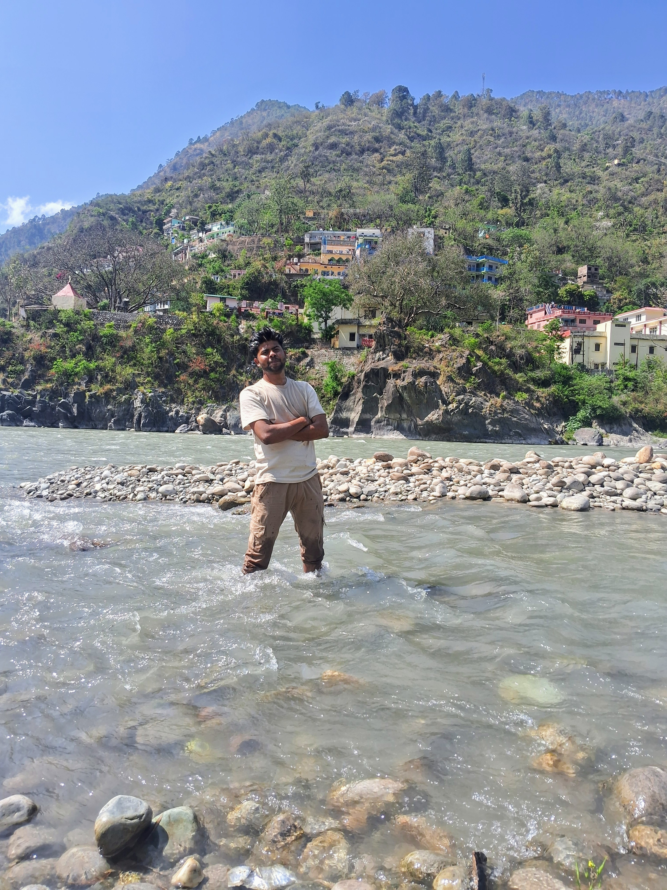

My first unforgettable road trip across the five sacred confluences of Uttarakhand
I began my journey from Haridwar to Rishikesh by bus. After reaching Rishikesh, we rented a scooty for just ₹500 per day. This was the beginning of an unforgettable road trip to explore the spiritual confluences of the Panch Prayag.

Devprayag is where the Bhagirathi and Alaknanda rivers meet to form the Ganga. The view was divine with crystal clear waters, ancient temples, and spiritual serenity. The sound of river merging was mesmerizing.

Next, we reached Rudraprayag — where Alaknanda meets Mandakini. The air felt more mystical here, with thick clouds passing over rugged hills. A nearby Shiva temple added to the spiritual aura.
This confluence of Alaknanda and Pindar rivers is said to be where Karna meditated in Mahabharata. The raw beauty of the mountains and the gushing river was inspiring and powerful.

Here, Alaknanda meets Mandakini. This place had a very calm and meditative vibe. Less crowded, it was perfect for some peaceful reflection and hot tea with locals.

The final and most beautiful Prayag was Vishnuprayag, where the Dhauliganga joins Alaknanda. For the first time, I witnessed snow-capped mountains, like a white bedsheet laid on nature. At night, we stayed in a cozy hotel, watched shining stars and a clear moon — something Delhi can’t offer.